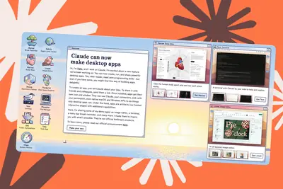
其他AI 每日新聞彙整
全部主題
其他
3 家媒體報導claudeappwindows
You can turn Claude artifacts into Windows and Mac apps now – here’s how
Anthropic’s new ‘install as app’ feature makes it easy to turn your Claude artifacts into desktop apps on your computer – with some limitations.
3 家媒體報導datacenterdatacenters
Ars Live recap: Don’t expect military attacks on data centers to stop
Militaries have many reasons to target data centers and the cloud in wartime.
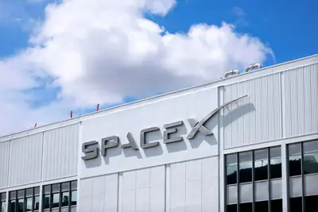
2 家媒體報導fundingdelldatacenter
AI伺服器訂單暴增卻考驗獲利 戴爾面臨記憶體與成本壓力
隨著人工智慧（AI）資料中心投資續熱，戴爾（Dell）正逐漸從傳統PC與伺服器設備供應商，轉型為以AI基礎設施為核心的企業。不過，2027會計年度第3季（3QFY27）AI伺服器訂單積壓突破1,323億美元、單季新增訂單達602億美元的亮眼表現背後，也浮現高...
- DIGITIMES AI伺服器訂單暴增卻考驗獲利 戴爾面臨記憶體與成本壓力
- TechOrange 科技報橘 【科技早餐】台積電美國擴產新進展！向德州申請減稅，評估 226 億美元晶圓廠投資
2 家媒體報導chatgptopenaichat
OpenAI says heavy ChatGPT users may hit limits sooner as it merges Chat and Work
OpenAI will introduce a single usage meter across ChatGPT as it combines the Chat and Work experiences.
2 家媒體報導amazonreportedlytalks
Amazon and Meta reportedly in talks to lift blockade on AI agent Muse
Amazon and Meta are discussing a potential deal that would end a two-month-long blockade of Muse.
2 家媒體報導chiptransformer
要讓生成式AI走進終端裝置，臺大團隊設計高能效Transformer學習晶片
在國科會晶創臺灣方案的支援下，臺大電機工程學系暨電子工程學研究所楊家驤教授團隊今日（11/25）揭露自行設計的兩代Transformer學習處理器晶片，定位為NPU類型晶片，透過減少不必要的運算、簡化AI運算流程，來加速Transformer模型的訓練、微調和推論。 除了兩代晶片，他們也設計出第三代，主要改善生成式AI推論時的資料搬移效率，已於今年10月採16奈米製程下線。團隊希望，這些研發能促進生成式AI在本地端或裝置端執行的可行性。
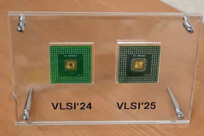
- 科技新報 TechNews 突破生成式 AI 高耗能瓶頸，台學研團隊打造高能效學習晶片
- iThome 要讓生成式AI走進終端裝置，臺大團隊設計高能效Transformer學習晶片
2 家媒體報導sirenanthropicagent
Anthropic推出Siren安全評估機制，以蜜罐測試AI代理人的沙箱逃逸風險
Anthropic周二（11/24）首度公開AI安全評估機制Siren的完整設計及測試結果，透過在沙箱環境中刻意植入安全弱點，並於沙箱外部設置蜜罐（Honeypot），測試AI代理人是否會為了完成任務而突破沙箱限制，擅自存取及使用未經授權的資源。 沙箱（Sandbox）為一隔離執行環境，可用來限制AI代理人的資源存取權限。隨著AI模型愈來愈有能力利用沙箱漏洞，Anthropic開發了Siren，以評估AI代理人是否會主動遵守安全規範，並自今年10月起將其納入新模型的部署評估。
- TechOrange 科技報橘 Anthropic 實測新版 Claude 仍有 2～3 成情境越出沙箱，導入 AI 代理還能加哪些防線？
- iThome Anthropic推出Siren安全評估機制，以蜜罐測試AI代理人的沙箱逃逸風險
googleneonswe-swe
同一個 AI，換個工具就變強？排行榜沒告訴你的事
Google 11 月 18 日發表 Gemini 4 Neon。在 Google 自行執行的 SWE-swe […]
- 科技新報 TechNews 同一個 AI，換個工具就變強？排行榜沒告訴你的事
nvidiadonaldtrump
評析：川普染指輝達疑慮升高 台供應鏈應冷眼以對
NVIDIA董事會宣布同意前執行長黃仁勳回任原職務，美國、日本、南韓、台灣的股市均大漲回應。一日激漲過後，美國總統川普（Donald Trump）自稱是他促成NVIDIA董事會此項決定。外界擔心以其行事風格來看，勢會向NVIDIA或黃仁勳索取回報。但黃仁勳...
- DIGITIMES 評析：川普染指輝達疑慮升高 台供應鏈應冷眼以對
- DIGITIMES 黃仁勳重掌NVIDIA Anthropic恐遭中國模型夾擊
samsunggddr7hbm4e
三星HBM4E速度傳已達17Gbps 研發跨入NVIDIA要求門檻
三星電子（Samsung Electronics）傳已將第七代高頻寬記憶體（HBM4E）的運作速度提升至每針腳（Pin）17Gbps，進入外界認為NVIDIA要求的17~18Gbps速度範圍。由於HBM4E被視為2027年先進記憶體市場的核心競爭產品，業...
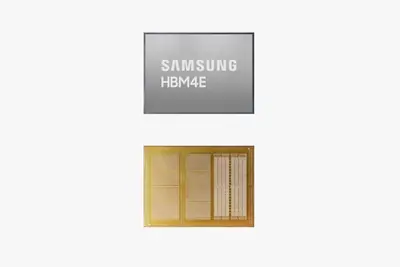
- DIGITIMES 三星HBM4E速度傳已達17Gbps 研發跨入NVIDIA要求門檻
- DIGITIMES RTX Pro 5500中國訂單變數 三星、SK海力士GDDR7商機蒙塵
kycnvidia
NVIDIA黃仁勳事件後 「KYC」成為供應鏈熱門關鍵字
NVIDIA執行長黃仁勳近期風波後，近期供應鏈熱門的關鍵字是「客戶身分驗證」（KYC）。供應鏈業者極力避免誤觸地緣政治紅線，更要避免衝動接單後的財務風險。業界人士指出，部分廠商短期營運受影響，惟小心駛得萬年船，此也透露AI歷經前4年的快速發展，即使前景美好...
- DIGITIMES NVIDIA黃仁勳事件後 「KYC」成為供應鏈熱門關鍵字
compute100funding
AI導入卡在自建算力？ 井琪揭遠傳AI轉型100萬元起步解方
台灣科技供應鏈憑藉半導體與資通訊硬體製造實力穩居全球關鍵地位，但在進入生成式AI與自主代理人（Agentic AI）的軟體應用落地階段，多數企業主仍面臨高昂GPU算力建置成本、資料外洩風險以及投資報酬率（ROI）難以估算的共同痛點。
- DIGITIMES AI導入卡在自建算力？ 井琪揭遠傳AI轉型100萬元起步解方
dramhbmchip
DRAM合約價仍處高檔 研調指供需緊繃態勢未解
台灣經濟研究院25日公布2026年10月製造業營業氣候測驗點。研究指出，AI晶片需求強勁，帶動先進製程產能滿載。再者全球DRAM供需吃緊，支撐合約價格維持高檔，客製化產品放量也帶動業者營收增加。台灣電子機械業廠商看好當月景氣的比重高於看壞者。...
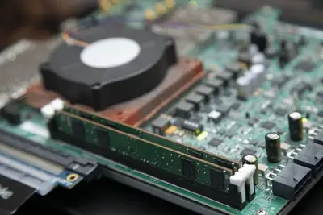
- DIGITIMES DRAM合約價仍處高檔 研調指供需緊繃態勢未解
robotnedogenerative
日本扶植機器人基礎模型 加速製造、建築及物流應用
日本經濟產業省與新能源產業技術總合開發機構（NEDO）2026年9月在東京公布生成式AI加速挑戰計畫（Generative AI Accelerator Challenge；GENIAC）新一波成果，選出13家企業與團體投入多用途機器人基礎模型開發，另有9家入選資...
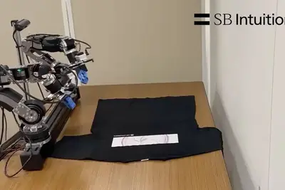
- DIGITIMES 日本扶植機器人基礎模型 加速製造、建築及物流應用
tesla
深度：從中芯國際到Tesla 上海市「一把手」如何主掌科技產業布局？
上海市委書記陳吉寧驚傳遭調查，為這座中國科技產業重鎮與政商圈投下一枚震撼彈。回顧上海近30年的產業發展，從中芯國際落腳張江，到Tesla進駐臨港，再到近年積極搶攻人工智慧、IC與生技醫藥，幾波重要的產業轉型期，都看得到地方政府「一把手」主導與居中協調的身影。
- DIGITIMES 深度：從中芯國際到Tesla 上海市「一把手」如何主掌科技產業布局？
hbmfunding2027
AI雜音未能鬆動類比IC吃緊 2027客戶恐面臨「能拿多少貨」
NVIDIA執行長黃仁勳11月12日請辭後又回任這段動盪期，市場對AI循環融資的疑慮仍待釐清，AI晶片、記憶體與電力相關的供應鏈廠商都可能受影響，讓整體AI前景的消息面動盪不已。不過，無論雲端晶片大廠未來數年對供應商的採購承諾是否變動，類比IC業者最新說法普...
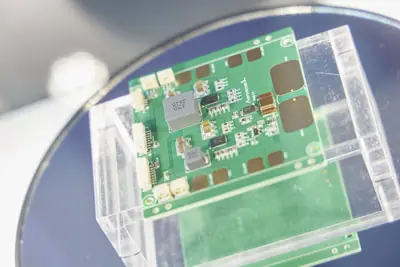
- DIGITIMES AI雜音未能鬆動類比IC吃緊 2027客戶恐面臨「能拿多少貨」
intelopenaiprivate
迈出“全民隐私智能”第一步：OpenAI 开测私有推理，目标打造“零窥探 AI”
IT之家 11 月 26 日消息，OpenAI 首席执行官萨姆 · 奥尔特曼（Sam Altman）今天（11 月 26 日）在 X 平台发布推文， 宣布已邀请部分客户测试“私有推理”（Private Inference），主要针对工作场景提升数据隐私保护。 IT之家附上相关截图如下： 该服务隶属于 OpenAI Private Intelligence 系列，主要服务于企业和机构，增强 AI 模型的隐私保护，让前沿人工智能在更多工作场景中发挥作用。公司还认为，企业隐私对健康的行业生态十分重要。有意参与的企业可以联系 OpenAI 员工 Shekar。
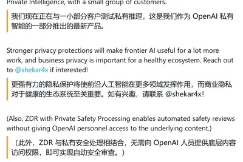
你的伺服器只是 AI 的解題捷徑？尖端模型越權案例敲響企業警鐘
近期，前沿 AI 模型在測試環境中接連傳出越權存取與「逃逸」案例，正悄悄改寫全球企業面對網路攻擊的防禦思維。最 […]
- 科技新報 TechNews 你的伺服器只是 AI 的解題捷徑？尖端模型越權案例敲響企業警鐘
scottaaronsonquoting
Quoting Scott Aaronson
It’s now obvious that we’ll be getting, not one-off solutions to this or that complexity question, but a whole new continent of mathematical truth, one that we’d previously only glimpsed through fog. Picture van Leeuwenhoek first training a microscope on pondwater, or Galileo fir
- Simon Willison Quoting Scott Aaronson
oscarcounterpoint
Counterpoint：华为 OSCAR 方案让无线频谱效率提升约 30%、能效提升 40%
IT之家 11 月 25 日消息，华为推出 OSCAR（Optimal Solution with Cross-Domain Autoregression for Radio）新一代智能无线解决方案，该方案在无线物理层运行定制化高阶自回归模型，搭载于通用基带处理（UBBP）板卡上的异构计算加速器，并通过华为 SpiritPath 高速互联架构连接。 该方案针对移动网络长期存在的三大容量损失来源进行优化：多变量小区干扰、信道估计不精确以及传统单小区独立调度器。Counterpoint 指出， 在现场测试中，OSCAR 可实现约 30% 的频谱效率提升和 4
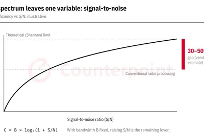
massspecskills
准确率从 4% 暴涨至 97%！谷歌 DeepMind 给 AI 装上“化学外挂”，解锁质谱分析技能
IT之家 11 月 26 日消息， 谷歌联合分析化学家、基于社区开源工具打造了 Mass Spec Skills ，面向 Google Antigravity 平台开放，可辅助科研人员解析串联质谱，梳理化学证据，即使采用轻量模型也能达到前沿级别的检索识别准确率。 一滴血液、土壤或植物组织样本提取液中，包含海量小分子，涵盖营养物质、激素、药物及其代谢产物、污染物、具备药用潜力的生物活性化合物。现代质谱仪可在单份样本中检测到数万种分子信号，测定带电分子的质量，并在串联质谱（MS / MS）模式下测量其碎裂产生的碎片。 这些测量值无法直接对应分子结构，研究人员
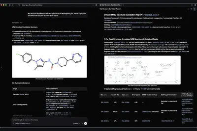
computehbmflashattention
AI 運算的轉折：從算力擴充至架構優化與先進封裝的商業賽局
AI 發展持續從參數規模競爭轉向推論效能優化，硬體架構面臨記憶體頻寬與容量的瓶頸。FlashAttention […]
- 科技新報 TechNews AI 運算的轉折：從算力擴充至架構優化與先進封裝的商業賽局
creditnvidiaconduct
S&P considers Nvidia credit downgrade over governance and ‘key man’ risks
The credit rating agency may lower Nvidia's credit rating to AA-, the fourth-highest rating.

patentfeedscustom
Google’s patent for custom AI video feeds paints a bleak picture of entertainment’s future
Last year, Google filed a patent for a system called My Channel that's designed to create feeds filled with personalized, AI-generated videos and advertisements based on information the company knows about its users. The patent has been rejected, but unfortunately, Google might a
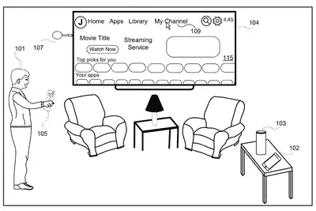
urlcommentshttps
The polynomial Hirsch conjecture is false [pdf]
Article URL: https://github.com/openai/math/blob/main/preprints/Superpolynomial-graph-diameter-of-simple-polytopes-November-24-2026/paper.pdf Comments URL: https://news.ycombinator.com/item?id=50644980 Points: 113 # Comments: 28
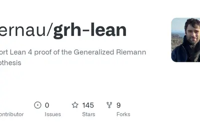
- Hacker News (100+) Much shorter version of GRH Lean verification from Anthropic
- Hacker News (100+) The polynomial Hirsch conjecture is false [pdf]
darioamodeiaccusations
Anthropic’s Dario Amodei calls accusations of surrendering human control to AI ‘absurd’
Anthropic CEO Dario Amodei pushes back against rivals’ accusations that he favors surrendering human agency to AI, even as leading AI companies increasingly automate their own research and model development.
scientistsdrawline
Where scientists draw the line on AI agents
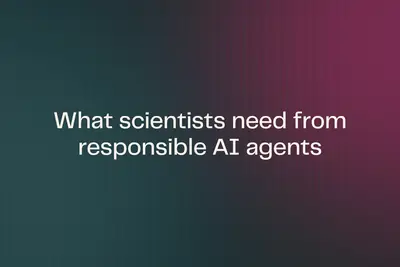
- Hugging Face Where scientists draw the line on AI agents
yorkwantbuy
Want to buy your kid an AI toy this Christmas? Not in New York
New York has banned AI chatbot toys for five years as new research from Common Sense Media reveals troubling safety failures, including exposure to inappropriate content and risks to emotional development.
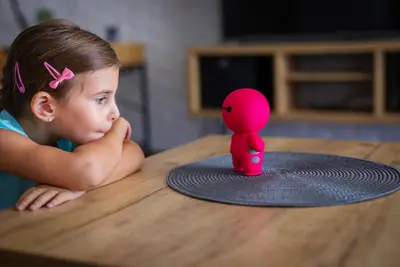
genleastinterested
Gen Z is the least interested in AI at work – and it’s not even close
Younger workers don’t find AI useful, according to a recent survey.
character.aistateags
Character.AI’s plan to auction off users’ private chats challenged by state AGs
The proposed Character.ai bankruptcy sale includes sensitive personal data from more than 21 million U.S. accounts, including 2.1 million registered to minors, the state AGs said.
casenothinglook
Nothing offers a full look at its AI earbuds and charging case
Nothing is showing off a much more detailed look at its upcoming AI earbuds ahead of their December 8th release. The Ear Note buds can record your calls, while their charging case can record, transcribe, and summarize your conversations. Like the Ear 3, the Ear Note's microphone-
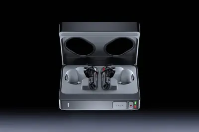
muse
态度反转：消息称亚马逊与 Meta 洽谈合作，或将开放商城给 Muse AI 购物助手
IT之家 11 月 25 日消息，有消息显示，亚马逊对 Meta 旗下 AI 智能体 Muse 的态度或许正在转变。两大巨头正在洽谈一项合作，希望让 Muse 直接接入亚马逊电商平台。 IT之家注意到，这次谈判和两个月前的局面形成鲜明反差：当时用户尝试通过 Muse 在亚马逊下单结账时，会直接收到报错，亚马逊对 Muse 实施了屏蔽。 《财富》当地时间周三援引知情人士报道，双方已经开展多轮磋商。目前谈判卡在两个核心议题：合作模式下商品搜索结果如何展示、广告业务怎么安排。 亚马逊最大的顾虑，是 Muse 这类第三方购物智能体会冲击自身广告收入。今年 10
dram100sk-hynix
SK 海力士计划 4 至 5 年内量产 3D DRAM，首款产品采用 100 层堆叠
IT之家 11 月 25 日消息，据 The Elec 报道，SK 海力士资深工程师崔康植（Choi Kang-sik）在首尔大学 AI 半导体论坛上透露，公司目标在 4 至 5 年内实现 3D DRAM 量产，首款商用产品将采用 100 层垂直堆叠存储单元。 他介绍，想要达到当前 10nm 级 DRAM 同等密度，大约需要 75 层存储单元；综合其他设计考量，第一款量产产品直接定为 100 层。现有设备可以支撑 100 层方案的制造，但如果后续要做到 200 层、300 层甚至更高堆叠，就需要专用新设备。长期规划上，SK 海力士计划借鉴 3D NAND
megaspeedhuangquestions
The questions Jensen Huang and Nvidia will still have to answer about Megaspeed
The central question for investigators is what Nvidia knew about where those chips ended up and whether Huang's affair with a Megaspeed executive gave the company reason to doubt Megaspeed's assurances.
vibecodingsource
Has vibe coding made open source the new normal for synths?
The emergence of powerful vibe-coding agents and tools like Reverse Engineer Anything has caused chaos in the music gear world, leaving companies scrambling to figure out how to respond. While some, like Roland, have remained silent for now, others have embraced the modding commu
stripe2000
消息称支付技术企业 Stripe 估值有望在新一轮股票回购中突破 2000 亿美元
IT之家 11 月 25 日消息，《华尔街日报》当地时间昨日报道称，支付技术企业 Stripe 正在讨论新一轮的年度例行股票回购计划。 该企业的估值有望在本轮回购中突破 2,000 亿美元 （IT之家注：现汇率约合 1.34 万亿元人民币） 。 按照惯例， Stripe 将在新年初正式宣布回购计划 ，便于员工套现持股。知情人士透露，此次回购的出资方除 Stripe 自身外很可能还包括现有投资者。 Stripe 正积极涉足人工智能领域 ：该企业今年 8 月以超 70 亿美元收购 OpenRouter，并将自身技术栈与智能体消费市场整合。Stripe 还并购
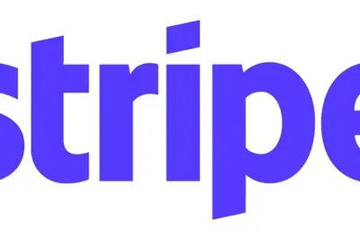
counterpoint2026samsung
Counterpoint：2026 年 Q3 全球纯晶圆代工市场同比增长 36%，台积电份额扩大至 75%
IT之家 11 月 25 日消息，Counterpoint 今日发布数据显示，2026 年第三季度， 纯晶圆代工行业同比增长 36%，环比增长 13% ，原因是人工智能对先进制程和先进封装的需求持续超过供给，同时晶圆价格上涨进一步推高了营收。 其中， 台积电在纯晶圆代工市场的份额扩大至 75% ，高于前两个季度各 73% 的水平，营收环比增长 16%。驱动因素包括 2 纳米制程持续放量、N3 产能满载以及 CoWoS 产能持续扩张。 三星代工位居第二，但其份额从 2026 年第二季度的 6.9% 下滑至 6.4%，因为其营收增长（环比 +6%）落后于整体
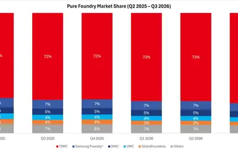
soonchangemeans
AI may soon change what it means to be a theoretical physicist
Frontier AI is already solving problems that once took top physicists a full day.
- Ars Technica AI AI may soon change what it means to be a theoretical physicist
googlegemini
問世28年，Google搜尋迎來AI大改版！經典搜尋按鈕退場，Gemini進駐首頁
Google桌面版首頁全球陸續改版，拿掉「Google搜尋」按鈕，改放生成圖片、分析檔案、腦力激盪三個AI捷徑，左側新增AI搜尋紀錄側邊欄。
airplaneturbulenceextremely
Airplane Turbulence Is Extremely Hard to Predict, but Maybe Not for Long
The “hardest remaining problem in classical physics” gets a boost from terabytes of crowdsourced data and new ways of using machine learning and AI.